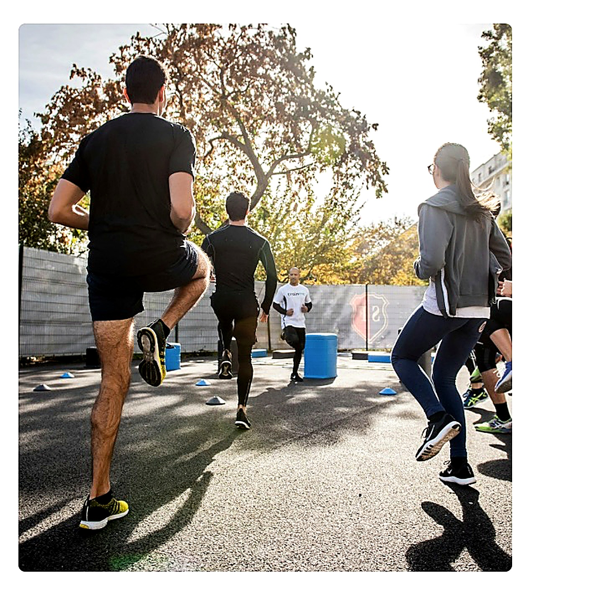

Bootcamp-uri, teambuilding-uri și evaluare
- Bootcamp-uri și teambuilding-uri.
- Distribuire chestionare individuale pentru identificarea problemelor și evaluarea lor.
- Interpretare rezultate cu psiholog acreditat.
- Întâlniri cu antrenor certificat - online / la sediu.
- Activități asistate cu animale (lucrul cu un specialist în dresajul canin).
- Activități artistice muzicale cu scop de accelerare a coeziunii sociale între angajați și a integrării valorilor organizaționale.